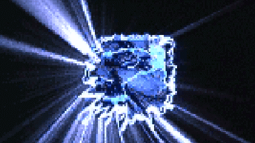

Essentiels Cyberpunk
Ces documents permettent une immersion rapide dans le Cyberpunk :
Idéologie
- Un Manifeste Cyberpunk
- Un manifeste cyberpunk, notre manifeste.
- Cyber Dada Manifesto
- Cyber Dada Manifesto, contrast Dada Manifesto in the beginning of 20th century. Digitize the World. Computer Generated Cyber Dada. Digitize. Interface.
- Cyberpunk Worldview
- Une description de la vision cyberpunk du monde et de sa façon de penser.
- Cyberpunk Philosophy
- Description de quelques idées cyberpunks.
- L'éthique des hackers
- Ce document inclus l'Ethique des Hackers telle que formulée par Steven Levy, quelques ajouts et remarques à ce propos et si une telle éthique existe vraiment.
Les bases
- New alt.cyberpunk FAQ
- La dernière version de la Foire Aux Question du newsgroup alt.cyberpunk.
- Glossaire Cyberpunk
- L'essentiel du jargon cyberpunk de A à Z.
- Future Culture Manifesto
- Ce manifeste décrit différents aspects de la cyberculture : la culture virtuelle, la culture pyschédélique, la culture industrielle, la culture de la rue, la "rave culture", le post-modernisme...
Livres
- Neuromancer
- Le livre devenu la bible du Cyberpunk.
- The Hacker Crackdown - Law and Disorder on the Electronic Frontier
- Ce livre de Bruce Sterling raconte l'assaut de 1990 contre les hackers, quand les forces de l'ordre ont arrêté avec succès des dizaines d'hackeurs présumés et autres individus qui enfreignaient les lois relatives à l'informatique.
Films
- Blade Runner
- Le film qui a posé les bases de l'identité visuelle du Cyberpunk et est ainsi devenu le "film Cyberpunk ultime".